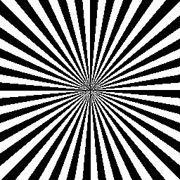
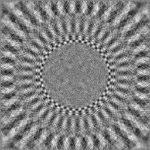
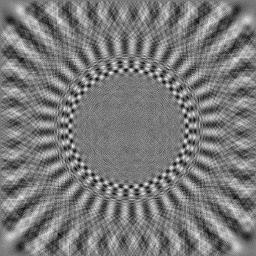
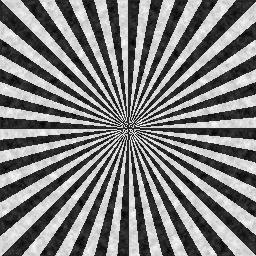

Fan example
The program bctf can be run in different ways:
- Flip phases (multiply each structure factor with the sign of the CTF)
- Apply (multiply each structure factor with the CTF)
- Correct (divide each structure factor with the CTF, using a wiener factor for small values)
- Fit parameters (not shown here)
Flipping phases
Phase flipping only involves a change of sign, and therefore the operation is a toggle, so that flipping the phases twice with the same parameters recover the original image:
bctf -verbose 7 -action flip -Defocus 0.9 fan.jpg fan_flip.jpg
bctf -verbose 7 -action flip -Defocus 0.9 fan_flip.jpg fan_flip2.jpg
Options:
-verbose 7 Verbosity: The amount of information printed to the shell.
-action flip Sets the "mode" to flipping phases.
-Defocus 0.9 Up to three input values: defocus minimum, defocus
maximum and the astigmatism angle. Giving only the first value implies that there is no astigmatism.

The 3 images: fan.jpg, fan_flip.jpg and fan_flip2.jpg
A fan-like radiation of black and white panels gives a spectrum of frequencies. Flipping the phases inverts contrast at certain annuli which can be recovered by a second flipping.
Applying a CTF
bctf -verbose 7 -action apply -Defocus 0.9 fan.jpg fan_apply.jpg
New option:
-action apply Sets the "mode" to multiplication with the CTF.

The input and output: fan.jpg and fan_apply.jpg
Correction for the CTF
The correction for the CTF involves a division which means that small values near the nodes of the CTF will amplify any noise in those amplitudes to unacceptable values: The correction therefore uses a wiener factor to substitute for these small values:
bctf -verbose 7 -action correct -Defocus 0.9 -wiener 0.1 fan_apply.jpg fan_correct.jpg
New option:
-wiener 0.1 Sets the wiener factor (a value between 0.001 and 1).

The input and output: fan_apply.jpg and fan_correct.jpg